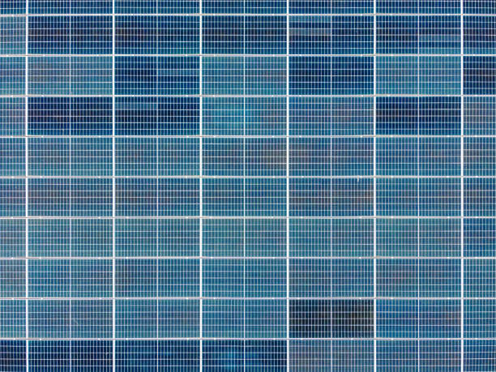

Forest Virginia
info@lindahardware.pro
Forest Virginia
info@lindahardware.pro

Pea gravel in Forest Virginia is perfect for adding texture to gardens, walkways, and patios. Get a natural, stylish finish while ensuring excellent drainage and durability for years to come.
Click Here To Call Us (877) 848-1711When it comes to creating beautiful and durable outdoor spaces, our Pea Gravel services in Forest Virginia are the top choice for homeowners and businesses alike. Known for its versatility and natural aesthetic, pea gravel is the perfect solution for a range of landscaping and construction projects. Whether you're working on a driveway, pathway, garden bed, or drainage system, our high-quality pea gravel offers an eco-friendly and cost-effective alternative to other landscaping materials.
Our pea gravel is sourced from the best quarries to ensure it is clean, consistent, and easy to work with. We provide a wide variety of colors and sizes to match your unique design needs. Pea gravel’s rounded texture allows for excellent drainage, making it a popular choice for areas prone to water runoff or heavy rainfall in Forest Virginia .
Not only is pea gravel an attractive option, but it's also low-maintenance. It’s resistant to weed growth and can be easily replenished to maintain its appearance. Our team of experts in Forest Virginia will help you determine the ideal amount of pea gravel needed for your project and ensure it’s installed properly for long-lasting results.
For the best pea gravel services in Forest Virginia choose us for reliable, professional, and affordable solutions. Contact us today for a free consultation and get started on transforming your outdoor space with high-quality pea gravel!
Residential & commercial Pea Gravel
Quality services at affordable prices
Immediate 24/ 7 emergency services


Pea gravel is a highly versatile and practical landscaping material, especially ideal for the unique climate of Forest Virginia . This small, rounded aggregate is not only aesthetically pleasing but also offers several benefits that make it a top choice for homeowners and landscapers in areas with hot, humid, and rainy weather, like Forest Virginia .
One of the primary reasons pea gravel is perfect for Forest Virginia 's climate is its excellent drainage capabilities. During Miami's frequent rain showers, water easily flows through the gaps between the smooth, rounded stones, preventing puddling and erosion in your yard. This feature makes pea gravel an excellent option for pathways, driveways, and garden beds, ensuring your outdoor spaces remain functional and dry.
Additionally, pea gravel’s natural composition helps regulate soil temperature. In Forest Virginia 's hot climate, it provides a cool surface for walking and gardening, reducing the need for constant maintenance. It also retains moisture in garden beds, helping plants thrive during the dry season by conserving water, which is crucial for sustainable landscaping in such a climate.
Another advantage of pea gravel is its ability to withstand extreme weather conditions. Its small size and compact nature allow it to resist shifting and displacement during strong winds or heavy storms, which are common in Forest Virginia . With minimal upkeep, pea gravel provides a durable and attractive surface for your landscaping needs.
Whether you are designing a patio, pathway, or drainage solution, pea gravel is an ideal choice for Forest Virginia homes, offering both beauty and practicality for various landscaping applications.
Residential & commercial Pea Gravel
Quality services at affordable prices
Immediate 24/ 7 emergency services
Drainage is a critical aspect of any commercial property, and utilizing pea gravel in drainage solutions can significantly improve the performance and longevity of your surface installations. Pea gravel allows for rapid drainage, promoting efficient water runoff and preventing stagnation.
Our services provide tailored drainage solutions that incorporate pea gravel as a key component. This material works effectively in stormwater management, reducing the risk of flooding and erosion in commercial settings.
Opting for our services means partnering with professionals who understand the complexities of commercial drainage solutions. We are committed to innovative designs that keep your property safe and functional, ensuring compliance with regulations and best practices.

Creating stunning garden displays requires attention to detail and quality components. Pea gravel is an exceptional choice for showcasing plants, artwork, or features while enhancing aesthetics and providing excellent drainage.
In Forest Virginia our team specializes in designing captivating garden displays utilizing pea gravel as a foundational material. The natural look of pea gravel complements various plants and decorative elements, allowing your exhibits to shine.
Our commitment to quality ensures that we provide only the best materials that will stand the test of time, whether you are showcasing a seasonal display or a permanent art installation. Choose us to transform your garden into a stunning visual experience.

Managing erosion is crucial for protecting your commercial property and maintaining its integrity. Pea gravel is a highly effective solution for erosion control due to its natural properties that promote soil retention while allowing water to flow naturally.
At Pea Gravel, we provide erosion control strategies tailored specifically for commercial properties in Forest Virginia . Utilizing pea gravel, we design systems that prevent soil erosion while maintaining an appealing landscape that aligns with your property's aesthetic.
Our team examines the specific needs of your property and develops a comprehensive plan to address potential erosion issues effectively. With our expert installation and quality materials, you can maintain the beauty and functionality of your property without the burden of ongoing erosion problems. Choose us for your erosion control solutions where we prioritize durability and quality through innovative pea gravel applications.

Effective drainage solutions are essential in preventing water damage and maintaining the integrity of properties. Pea gravel is often utilized as a vital component in drainage systems, offering excellent filtration and runoff management.
In Forest Virginia our experienced team is skilled in designing tailored drainage systems that incorporate pea gravel effectively. We assess your needs and establish a drainage layout that works in harmony with the natural landscape.
Choosing us for your drainage solutions means choosing a partner focused on quality and service excellence. Our commitment to using the best materials ensures a durable and efficient drainage system that protects your property from water-related issues.

Adding ponds and water features to your landscape can create a tranquil and appealing environment. Pea gravel serves as an excellent choice for ponds, providing a natural-looking option that enhances the aesthetic while improving functionality.
Using pea gravel in water features or around ponds can help stabilize soil, promote drainage, and create a clean, inviting atmosphere. our team specializes in designing water features that blend seamlessly with your landscaping while focusing on the benefits of using grape gravel.
When you choose us, you’re partnering with experts dedicated to creating beautiful, functional outdoor environments. We ensure all aspects of your pond or water feature installation reflect your vision while offering long-lasting quality.
Achieving a realistic and functional artificial turf installation requires careful attention to the infill material used. Pea gravel is an innovative infill option that provides weight, stability, and natural drainage, enhancing the performance of artificial turf.
At Pea Gravel, we assist in the installation of artificial turf systems utilizing pea gravel infill designed to enhance the overall performance and longevity of your beautiful greens. Our team specializes in understanding the unique characteristics of your property, ensuring the turf installation is practical for your use case.
Using pea gravel as infill allows for high drainage capabilities, preventing water accumulation on the surface and ensuring a firm footing. This innovative solution keeps your artificial turf looking fresh and usable year-round, minimizing maintenance concerns. Choose us for professional artificial turf installations that balance beauty and functionality through expert pea gravel applications.

Creating clear boundaries for your driveway enhances aesthetic appeal and functionality while helping keep gravel in place. Pea gravel is an excellent choice for driveway edging, offering a visually appealing, natural solution that complements any landscape design.
, effectively edging your driveway with pea gravel results in a neat and finished appearance. It also helps define the boundaries of your landscaping while providing natural drainage, reducing the potential for erosion from washout during heavy rains.
Our expertise in installing pea gravel driveways ensures that you're receiving quality workmanship and material selection. We are committed to designing driveway solutions that enhance your property’s curb appeal and functionality.

Using the right aggregates in concrete mixes is crucial for creating durable and resilient surfaces. Pea gravel serves as a popular aggregate choice, providing strength and stability while achieving a desirable finish in various concrete applications.
At Pea Gravel, we offer high-quality pea gravel specifically designed for use in concrete mixes in Forest Virginia . Our team understands the unique properties of aggregate materials, ensuring you achieve the best results whether pouring new driveways, sidewalks, or slabs.
Using pea gravel as aggregate allows for a smooth finish with notable durability, supporting significant weight and resisting cracking over time. Our experts offer guidance on the appropriate ratios and methods for incorporating pea gravel into your concrete mixes, ensuring efficient use tailored to your specific needs. Engage us for top-quality concrete solutions that leverage the versatility of pea gravel .
Years Experience
Expert Technicians
Satisfied Clients
Compleate Projects
At Linda Hardware, we pride ourselves on providing the highest quality pea gravel to homeowners and contractors across Forest Virginia . With years of experience in the industry, our dedicated team ensures that every product meets the highest standards of quality, durability, and reliability. Whether you're working on landscaping, construction, or any other project, we deliver the perfect pea gravel for your needs.
What sets us apart is our commitment to customer satisfaction. We understand that every project is unique, and that’s why we offer a wide range of pea gravel options to suit diverse preferences. From decorative gardens to durable driveways, our pea gravel is perfect for a variety of applications. Our team is always ready to help guide you in choosing the best material for your project, ensuring that you get exactly what you need.
We serve customers in all cities in Forest Virginia with fast, reliable delivery and competitive pricing. Our local knowledge of Forest Virginia gives us an edge in providing the right materials for the area’s specific needs.
At Linda Hardware, we believe in offering more than just products; we offer solutions that make your projects easier and more successful. From top-tier quality to outstanding customer service, trust us to be your go-to supplier for pea gravel in Forest Virginia .
Choose Linda Hardware today for unmatched service, premium quality, and reliable delivery!
In today's world, ensuring your driveway is not only functional but also visually appealing is paramount. Pea gravel for driveways offers an affordable, durable, and attractive solution for homeowners . Not only does it provide excellent drainage, preventing water pooling, but it also adds a rustic charm that enhances your property's curb appeal. The smooth, rounded stones come in a variety of colors and sizes, allowing you to customize your driveway to suit your style.
Choosing us means opting for quality. Our pea gravel is sourced from the finest suppliers, ensuring consistency and resilience in all weather conditions. Our installation team is experienced and uses best practices to create a stable base and effective drainage system. Why settle for ordinary when you can have extraordinary? Let us help you create a stunning driveway that welcomes you home every day.
Landscape design can significantly impact the overall look and feel of your outdoor space. When it comes to innovative and versatile landscaping solutions, pea gravel is an excellent choice. Whether you're looking to create a zen garden, a playground for your kids, or a serene retreat, pea gravel offers endless possibilities.
With its aesthetic appeal and landscaping benefits, our pea gravel options are perfect for pathways, edging, ground cover, and decorative accents. We pride ourselves on being at the forefront of landscape trends . Our team is dedicated to helping you conceptualize your landscaping vision with quality materials and expert advice. Free consultations are available, allowing you to explore various styles that utilize our pea gravel.
By choosing us, you gain access to professional landscape designers who understand the unique climate and environmental conditions of Forest Virginia . We can help transform your outdoor area into a beautiful, functional space that you'll love for years to come.
Creating inviting walkways and pathways is essential for enhancing the accessibility and aesthetics of your outdoor spaces. Pea gravel pathways offer a unique charm that blends beautifully with nature, making them a favored choice among homeowners and landscapers alike.
At Pea Gravel, we design and install pea gravel walkways in Forest Virginia that not only set the stage for a beautiful outdoor experience but also provide functionality. Our team understands the importance of designing pathways that accommodate regular foot traffic while ensuring ease of use. This is achieved through careful depth measurement and stone selection that aligns with your specific needs.
Furthermore, pea gravel allows for excellent drainage, reducing muddy problems particularly during rainy seasons. Our landscaping experts can create winding garden paths or straightforward solutions that lead directly to your door, customizing to fit your style and layout. Choosing us means you are selecting quality materials, expert installation, and a commitment to creating outdoor spaces you'll love for years.
Garden beds are focal points for many homes, and pea gravel can enhance their beauty while providing practical benefits. Utilizing pea gravel in your garden beds can help to conserve moisture, deter weeds, and provide a neat, finished appearance. It’s an incredibly versatile material that can be used in various ways, from decorative ground cover to practical soil coverage.
At Pea Gravel, we understand the dynamics of garden design . Our team can help you decide how best to incorporate pea gravel into your garden beds. Whether it's creating a low-maintenance rock garden or a refined border to your flower beds, our various options can suit any homeowner’s vision.
Pea gravel’s natural look integrates perfectly with plants, allowing the beauty of your flowers and shrubs to stand out. Additionally, it promotes better drainage, ensuring that your plants receive adequate water without drowning. Let our experienced professionals help you cultivate the garden of your dreams using the best pea gravel solutions available .
If you are looking to create a charming and relaxing space in your backyard, pea gravel patios are an excellent choice. They offer a beautiful and practical solution for outdoor entertainment areas or cozy relaxation spots surrounded by nature. The smooth texture and attractive colors of pea gravel can complement any patio design.
At Pea Gravel, we specialize in designing and installing pea gravel patios that reflect your lifestyle and enhance your outdoor experience. We'll work with you to understand your needs and dreams for the patio space. This means considering everything from the size and shape of your desired patio to how you plan to use it, whether it's for dining, lounging, or entertaining guests.
Pea gravel is low-maintenance and allows for effective drainage, preventing water from pooling on your patio after a rainstorm. Our knowledgeable team ensures proper installation techniques, creating a durable surface that can withstand heavy foot traffic while remaining comfortable underfoot. Experience the joy of a beautiful pea gravel patio with our expert services .
Safety is paramount when it comes to designing playground areas, and pea gravel is an ideal solution. It provides a soft surface that can cushion falls, reducing the risk of injury. Our premium-grade pea gravel is certified safe for use in playgrounds, making it a reliable choice for homeowners, schools, and parks .
The natural drainage and permeability of pea gravel help keep playgrounds dry, reducing mud and accumulations of water that can contribute to unsafe conditions. It also offers a non-slip surface that encourages active play.
When you choose us for your playground surface needs, you’re selecting a company with expertise in safety and quality. We understand the needs of families and communities and strive to provide an installation that meets or exceeds safety standards while creating a fun and engaging environment for children.
If you’re a pet owner, you know how essential it is to create a space where your furry friends can roam, play, and relax comfortably. Pea gravel is an excellent choice for dog runs and pet areas, offering both comfort and practicality. Its soft texture is gentle on paws and provides natural drainage, preventing muddy conditions that can arise with traditional turf.
, our pea gravel solutions can help design a dedicated space for your pets where they can enjoy being outdoors without the mess. The aesthetically pleasing appearance of pea gravel also means that your pet area can blend seamlessly into your landscaping.
Choosing us means you’ll receive top-quality materials and expert installation tailored to your pets’ needs. Our focus on customer satisfaction translates into a pet-friendly environment without compromising style or functionality.
Transform your flower beds into stunning focal points with the addition of pea gravel. It’s an excellent mulch alternative for flower beds, providing excellent drainage while maintaining moisture in the soil. The beauty of pea gravel comes not only from its appearance but also from its ability to enhance the health and vitality of your plants.
In Forest Virginia using pea gravel in flower beds can help prevent weed growth, making the upkeep of your garden much easier. Its unique texture and color options can also complement a wide variety of flowers, highlighting their beauty.
When you choose our services, you’re opting for eco-friendly options tailored to your garden’s needs. Our team is dedicated to helping you design flower beds that are not only beautiful but well-maintained, ensuring your flowers thrive all year long.
Creating a rock garden can be a rewarding experience, bringing together different textures and colors in a cohesive design. Pea gravel is ideal for rock gardens, offering a blend of natural beauty and practicality. This versatile material, can highlight your focal stones while providing a soft contrast that allows plants to shine.
Using pea gravel in your rock garden can help improve drainage and prevent soil erosion, which are crucial aspects of maintaining healthy plants. Furthermore, its lightweight nature allows easy rearrangement of elements for those who like to change their landscape designs frequently.
When you partner with us, you're working with a team skilled in creating harmonious outdoor spaces. We provide a range of pea gravel options to suit your rock garden design, ensuring that every detail resonates with your vision for your garden.
Xeriscaping is an eco-friendly landscaping approach designed to conserve water while still creating beautiful outdoor spaces. Pea gravel plays a crucial role in xeriscaping, as it provides excellent drainage, reduces weed growth, and has a high aesthetic appeal.
Our team in Forest Virginia is highly knowledgeable about the principles of xeriscaping, helping you choose the best plants that thrive in our climate alongside our pea gravel. By using pea gravel in your xeriscaped areas, you can ensure a drought-tolerant landscape that requires less maintenance and water.
When you choose us for your xeriscaping project, you gain a partner dedicated to environmental sustainability and aesthetics. We utilize high-quality materials, including colorful and diverse pea gravel options, to bring your xeriscaping vision to life.
Parking lot design is often seen as purely functional, but the choice of materials can significantly affect aesthetics and drainage. Pea gravel is an innovative option for parking lots, offering durability, reliability, and aesthetic advantages that benefit businesses in Forest Virginia .
At Pea Gravel, we are committed to providing top-notch solutions for parking lots that incorporate pea gravel effectively. Its porous nature allows rainwater to percolate through, reducing puddles and preventing flooding. This not only improves safety but also contributes to a more appealing environment for employees and guests.
In addition to functionality, pea gravel adds a distinctive look to your parking lot, setting your business apart. It can be used in various designs, from traditional gravel parking spaces to structured layouts that promote efficient and organized parking. Partner with us to create a parking lot that provides both practicality and visual appeal for your business in Forest Virginia .
Outdoor events require properly designed spaces that enhance the experience while providing practical solutions for guests and organizers. Pea gravel can be an ideal choice for outdoor event spaces, creating a unique aesthetic and practical surface that encourages gathering and interaction.
At Pea Gravel, we specialize in designing outdoor event spaces that offer functionality and elegance through the use of pea gravel. It provides a solid surface that promotes comfort for guests while allowing for proper water drainage beneath, ensuring a dry and pleasant atmosphere, irrespective of the weather.
Furthermore, pea gravel can be utilized to create defined areas for seating, dining, or activities, enhancing the overall flow of your event. Whether you are hosting weddings, corporate events, or community gatherings, our team works closely with you to design and implement a beautiful outdoor space that clients and attendees will remember. Choose us for impeccable outdoor event spaces enhanced by pea gravel .
Creating a welcoming environment for staff and customers begins with practical and aesthetic pathways in commercial spaces. Pea gravel is an elegant and sustainable solution, making it an ideal choice for high-traffic areas. Its non-slip surface, excellent drainage, and pleasing natural appearance are ideal for enhancing your business's exterior.
, we provide tailored solutions for commercial pathways, ensuring they reinforce your brand's image while providing customer convenience. Whether you need paths for outdoor dining, garden displays, or thoroughfares connecting different areas of your property, we have the knowledge and expertise to execute the design flawlessly.
Our commitment to quality ensures that we use the highest-grade pea gravel available. Trust us to construct lasting pathways that enhance your commercial property while catering to the needs of your customers.
Business courtyards serve as extensions of your indoor space, allowing opportunities for creativity and tranquility. Utilizing pea gravel in your business courtyard design presents a sophisticated yet laid-back ambiance where employees and clients can relax and unwind.
, our approach to incorporating pea gravel in courtyards includes focusing on aesthetic appeal and functionality. This easily customizable material allows you to create intimate gathering spots and enhance natural beauty while providing excellent drainage.
By choosing our services, you're not just getting top-quality pea gravel—you're gaining a strategic partner dedicated to transforming your business’s outdoor spaces into welcoming environments that align with your brand and improve employee satisfaction.
A retail storefront is often the first impression of your business, and enhancing its curb appeal is critical for attracting customers. Pea gravel offers a unique and stylish solution for landscaping, creating visually appealing displays that draw attention to your products and services.
, using pea gravel in your storefront landscaping allows for creative designs, integrating greenery with decorative stones. Not only does it improve aesthetics, but it also aids in drainage, keeping your landscape fresh and attractive throughout the seasons.
With our team by your side, you'll receive expert guidance in selecting the right type of pea gravel to complement your storefront while ensuring practical, sustainable choices. Our commitment to customer service translates into beautiful results, helping you build a positive brand image.
The landscaping of hotels and resorts plays a critical role in the guest experience, forming an essential part of the atmosphere. Pea gravel is an excellent choice for enhancing hotel landscapes, offering a harmonious balance of beauty and functionality.
In Forest Virginia incorporating pea gravel into your hotel or resort landscaping can create inviting pathways, tranquil seating areas, and stunning visual features. The versatility of pea gravel means it's suitable for various design styles, from modern minimalism to rustic charm.
Choosing us means you partner with experts who understand the importance of creating lasting impressions on your guests. We provide tailored solutions that enhance your property’s unique character while ensuring practical benefits like drainage and ease of maintenance.
Public parks and playgrounds need durable, safe surfaces that encourage community interaction. Pea gravel is a perfect solution, providing a natural look while ensuring excellent drainage and safety for children.
Our team can help design and install pea gravel surfaces that meet safety standards for playgrounds, ensuring children can play freely while parents can relax. Using pea gravel in public parks also encourages environmental responsibility with its sustainable attributes.
Our commitment to quality materials and expert installations means that your public spaces will be inviting and functional for years to come. Trust us to create safe, beautiful environments where families can create lasting memories together.
Pea gravel is an excellent material choice for enhancing the aesthetics and functionality of your Forest Virginia property. Known for its smooth, rounded texture and versatile applications, pea gravel offers a range of benefits that make it ideal for landscaping and construction projects.
One of the key advantages of using pea gravel is its low maintenance requirements. Unlike traditional gravel or other landscaping materials, pea gravel doesn’t need regular raking or re-grading. This makes it an ideal choice for homeowners in Forest Virginia who prefer a low-maintenance yard that still looks great year-round.
Pea gravel also offers excellent drainage properties, making it perfect for areas with heavy rainfall or soil that tends to retain water. It helps to prevent water buildup, which can lead to erosion or mold growth. Whether used in driveways, pathways, or garden beds, pea gravel allows rainwater to flow freely, reducing the risk of water damage.
Additionally, pea gravel is cost-effective and durable. Its natural, neutral color complements various landscaping themes, making it a popular choice for patios, walkways, and decorative features. Over time, pea gravel holds up well against wear and tear, ensuring that your investment lasts for many years.
Incorporating pea gravel into your Forest Virginia property is an easy way to boost curb appeal, increase functionality, and add value. Whether you’re revamping your garden or creating a new outdoor space, pea gravel is a versatile solution that offers lasting benefits.
Forest is a census-designated place (CDP) in eastern Bedford County, Virginia, United States. The population was 11,709 at the 2020 census. It is part of the Lynchburg Metropolitan Statistical Area.
Yes, pea gravel helps with erosion control by promoting water drainage and preventing soil erosion on slopes and hills .
Pea gravel is highly durable and can last for many years with minimal maintenance, making it an excellent long-term investment for landscaping projects .
Pea gravel is an ideal material for water features such as ponds, fountains, or dry creek beds, as it helps with drainage and creates a natural aesthetic in Forest Virginia .
To prevent weeds, install a weed barrier fabric beneath the gravel and maintain a layer of pea gravel at least 2-3 inches thick for optimal results.
Yes, Linda Hardware offers delivery services for pea gravel directly to your location in Forest Virginia . Contact us to schedule a delivery at your convenience.
Absolutely! Pea gravel is perfect for creating a beautiful, low-maintenance patio in Forest Virginia offering a natural, rustic look while allowing water to drain easily.
Pea gravel creates a smooth, comfortable surface for walking, provides excellent drainage, and adds a natural aesthetic to pathways making it ideal for high-traffic areas.
Yes, pea gravel is pet-friendly and a great choice for creating safe and comfortable outdoor spaces for pets as it is soft and non-toxic.
The cost of pea gravel varies depending on the quantity and delivery distance. Contact Linda Hardware for a customized quote based on your needs in Forest Virginia .
Pea gravel is suitable for driveways with moderate traffic. However, for heavy traffic areas, consider adding a stabilizer or combining pea gravel with other types of gravel for better durability in Forest Virginia .
To clean pea gravel, simply use a garden hose to wash off dirt and debris. For deeper cleaning, you can occasionally replace the gravel or wash it with a pressure washer.
The amount of pea gravel you need depends on the area you're covering. Linda Hardware provides a gravel calculator to help estimate how much you'll need based on your garden's dimensions.
To level pea gravel, use a rake to spread the gravel evenly, and then compact it using a mechanical compactor. This ensures a smooth and even surface for your project .
Yes, pea gravel is a sustainable option as it is natural and durable. It doesn’t require frequent replacement, reducing waste, and it provides good drainage to prevent erosion.
Pea gravel typically ranges from 3/8 to 3/4 inch in diameter. It is smaller, rounder, and smoother than other types of gravel, making it ideal for decorative landscaping .
Pea gravel is a small, rounded, smooth stone commonly used in landscaping for paths, driveways, and garden beds. It's versatile, aesthetically pleasing, and drains well, making it ideal for various outdoor projects.
Pea gravel is available in a variety of colors, from natural tones like brown and beige to more vibrant hues. Linda Hardware offers several color options for your landscaping needs .
Yes, pea gravel is a great, soft surface for playgrounds, providing a cushioned landing for children. Just ensure the depth is sufficient to provide safety in Forest Virginia .
Linda Hardware offers high-quality pea gravel at competitive prices, with reliable delivery and expert advice to help you choose the right material for your project in Forest Virginia .
Yes, pea gravel is suitable for slopes especially when used with proper edging to prevent displacement. Its drainage qualities make it a great choice for sloped areas.
You can order pea gravel from Linda Hardware online through our website, or by calling our customer service team for assistance with ordering and delivery to your Forest Virginia location.
Pea gravel does not attract pests and is a great choice for pest-free landscaping in Forest Virginia . It also allows water to drain properly, reducing standing water that could attract mosquitoes.
To prevent erosion, use edging to contain the gravel and ensure a solid base. Additionally, ensure the area has proper slope and drainage to avoid displacement.
To install pea gravel, start by leveling the ground, then lay down a weed barrier before spreading the gravel evenly. Linda Hardware can offer guidance or connect you with local professionals for installation.
Yes, pea gravel is an excellent choice for drainage systems due to its ability to allow water to pass through easily, making it ideal for landscaping and foundation drainage .
Pea gravel is smaller, smoother, and more visually appealing than other gravel types, making it the best choice for areas where aesthetics and comfort matter, such as pathways or decorative features .
Regularly rake the gravel to keep it level, and replace any gravel that gets displaced. Additionally, washing pea gravel annually helps to maintain its appearance.
Yes, pea gravel is an excellent choice for driveways because it's easy to maintain, provides a natural look, and allows for proper drainage, preventing puddles.
Yes, pea gravel can withstand freezing temperatures. However, it's important to ensure proper compaction and drainage to prevent shifting and freezing problems .
Yes, pea gravel can be mixed with other materials like sand or crushed stone to achieve the desired texture and appearance for your project .
"Linda Hardware helped me with my backyard project by providing high-quality pea gravel. The gravel was perfect for creating paths in my garden, and the delivery was quick. The customer service was also excellent. I will definitely be using Linda Hardware again in Forest Virginia ."
Profession
"Linda Hardware made my landscaping project effortless. The pea gravel was of excellent quality, and the delivery was fast. Their customer service was outstanding. I’m very pleased with the results and will certainly use Linda Hardware for future landscaping needs in Forest Virginia ."
Profession
"Linda Hardware’s pea gravel is the best I’ve found in Forest Virginia . The gravel was exactly what I needed for my outdoor project, and the delivery was fast and professional. The pricing is competitive, and I will definitely continue to use their services."
Profession
Forest VA Pea Gravel Pros
(877) 848-1711
info@lindahardware.pro
09.00 AM - 09.00 PM
09.00 AM - 12.00 PM